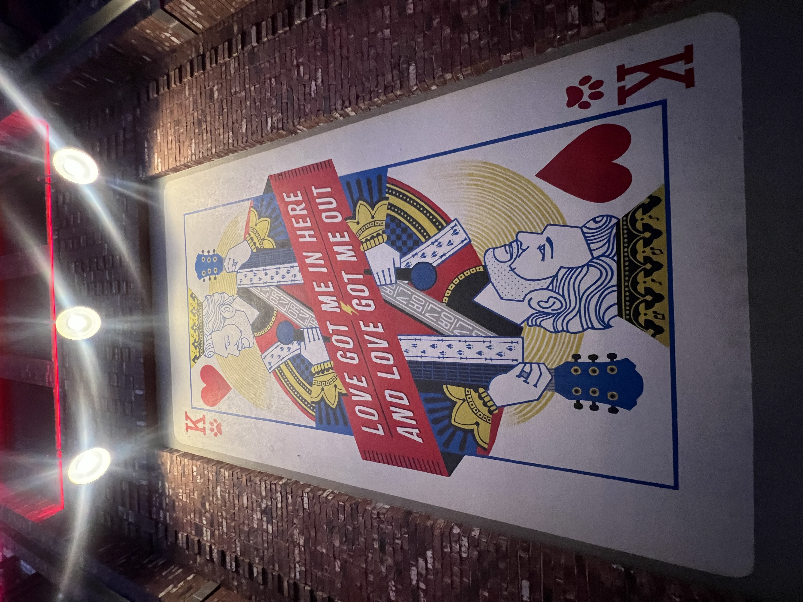
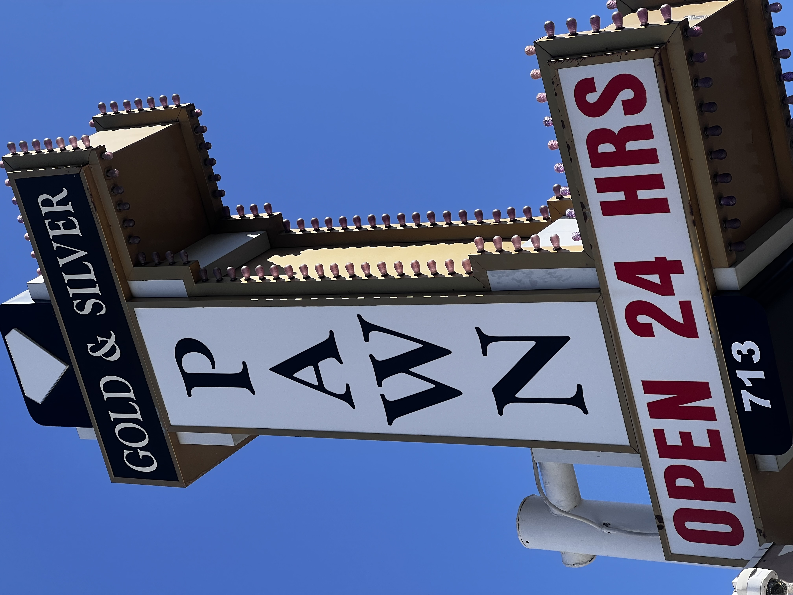
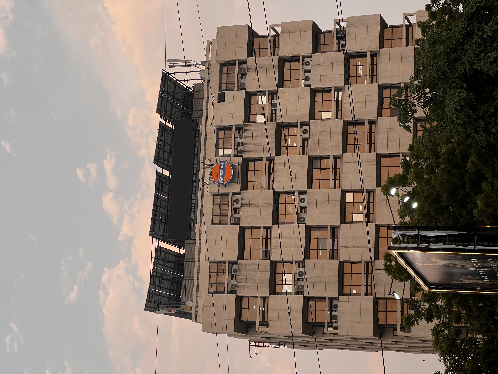
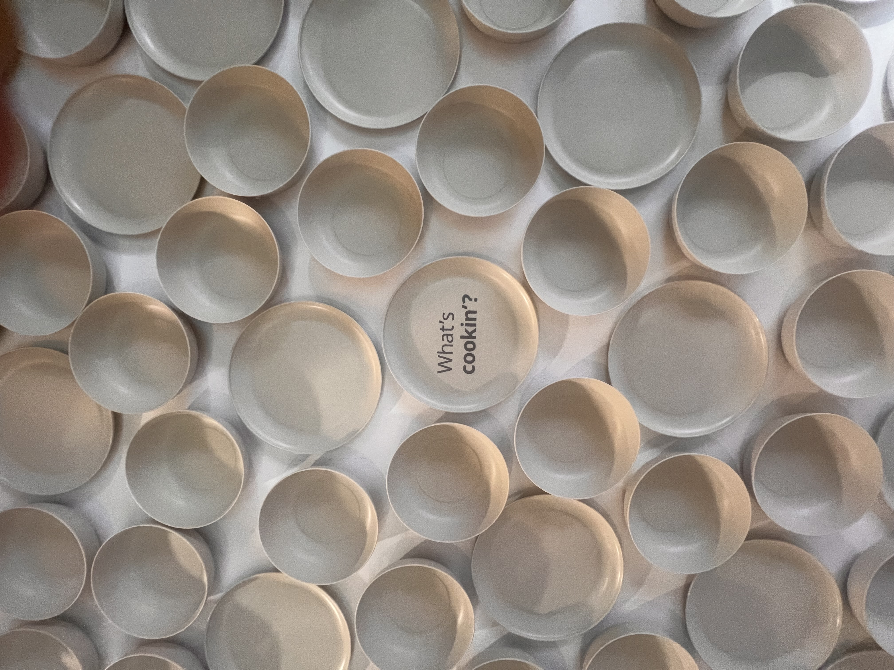
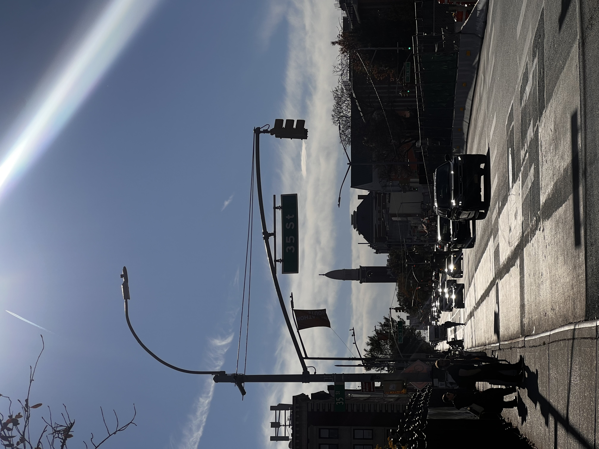

Utkarsh Jain
Machine Learning Engineer
I'm an MLE based in Brooklyn, NY, focused on LLMs, agentic systems, and RAG pipelines. I've shipped enterprise-grade AI in production — multimodal agents, document intelligence, and self-healing code systems — at startups moving fast. Outside of work, you'll find me on a badminton court, boxing, or on a bike.
Experience
- Architected a multi-strategy retrieval layer — semantic search, keyword search, a hierarchical page index agents traverse to locate optimal sections, and an n-gram document graph for cross-document relationship discovery — because no single retrieval method works for everything
- Report Writing Agent that takes a table of contents, finds everything relevant across the document store, and writes section by section — 70+ pages at 92% F1
- Engineering Drawing Analysis Agent that reads technical drawings the way an expert would — ignoring most of it, locking onto the sections that matter — 93% recall on finding the right specifications
- Ran agentic workflows in production on Temporal — handling retries, state persistence, and timeouts for multi-step agents that can't just crash and restart
- Owned client discovery end-to-end — went on-site, synthesized requirements directly with stakeholders, and delivered tailored agent deployments
- Legal documents don't have a schema — emails, invoices, and court filings each arrive in their own format. Built an extraction engine that maps all of them to structured data with custom schemas, so downstream analysis actually has something to work with
- Matter Intelligence: a context engineering system that surfaces the right information at the right time for legal review — cut document review from weeks to hours by making sure the model always has what it needs to reason, not just everything it might need
- Built a self-healing code agent — it runs its own output, catches its own errors, and fixes them before handing anything back; near-zero hallucinations because it doesn't stop until the code actually works
- Held weekly office hours and graded assignments for a 120-student graduate ML course
- Most document ingestion stops at text — built a multimodal pipeline that extracts insights from images, charts, and diagrams inside non-scannable documents, because that's where the information actually lives
- Curated an 800K+ point training dataset from scratch, building the cleaning and mining pipelines to get there — because a model is only as good as what you train it on
- Ran a head-to-head benchmark of Pinecone vs. Qdrant at scale with synthetic data, measuring recall and query latency under production-representative load — the kind of due diligence that makes a technology decision defensible
- Designed rubrics and graded assignments for 120 undergrads in algorithms — complexity analysis, graph algorithms, dynamic programming
- Automated APAC portfolio management workflows in Python, saving ~200 man-hours
- Revamped a legacy RPG API with Node.js and performed network load testing with JMeter
Projects
Machine Learning & AI
15 projects
▶
Can an AI spot a face that was never real? Pitted two vision models head-to-head on a custom deepfake dataset to find out.
Fine-tuned ViT and DINO transformers on a custom deepfake dataset; controlled ablation across activations and dataset splits measuring accuracy, F1, and ROC-AUC.
GitHub ↗The strongest predictor of NYC rent isn't bedrooms — it's bathrooms. Scraped StreetEasy and Zillow, pulled in census data, and let the model settle it.
End-to-end pipeline scraping StreetEasy + Zillow, merged with census data; XGBoost + NN regressors hit 90% accuracy predicting NYC apartment prices — model also flags apartments priced significantly above or below what their features justify.
GitHub ↗Trained an AI to recognise food. Put it on the internet. Threw thousands of requests at it. Watched what broke — then scaled it.
Transfer learning on Food-11, deployed on Kubernetes with HPA, load-tested with Siege — full train-deploy-scale-observe loop.
GitHub ↗What if your neighbour could buy your leftover solar power? Simulated the entire P2P market — with real scraped PV data, not synthetic numbers.
Multi-agent simulation of a P2P solar energy market with real scraped PV data, two iterative model versions.
GitHub ↗Getting a drone across a city without hitting anything is harder than it looks. Built the path planner — and the logic that actually flies it.
Iterated A* chains through an arbitrary waypoint sequence rather than a single goal — enabling multi-leg flight plans through a 2.5D urban obstacle map; benchmarked 10 heuristics to find the most efficient strategy.
GitHub ↗Which patients look alike when you strip out the labels? Clustered a real stroke dataset two different ways — and the groupings disagreed.
Patient risk clustering on real healthcare stroke dataset using Euclidean and Jaccard similarity metrics.
GitHub ↗A straight line or a curved one — which shape separates faces from not-faces better? Ran the experiment to find out.
Linear and kernel SVM classifiers trained for face patch detection.
GitHub ↗Treat every pixel as a dot. Group the dots that look alike. The image repaints itself in the process.
K-Means pixel clustering for image segmentation with visual comparison across different k values.
GitHub ↗What makes an article go viral on Mashable? Trained a model on 40,000 articles — turns out topic matters more than word count.
Regression models (Linear, Ridge, Random Forest) predicting Mashable article share counts.
GitHub ↗Upload your financial documents and ask questions about them. If the first search isn't good enough, the agent rewrites its own query and tries again.
Async Kafka pipeline between Spring Boot and FastAPI handles PDF ingestion without blocking the API; agentic RAG loop then assesses retrieved context, rewrites its own query if needed, and cites source and page.
GitHub ↗Paste in a biased news article. Get back a rewritten version with the sentiment stripped out.
RoBERTa bias detector (89% acc, 0.88 AUC-ROC) + T5 paraphraser trained with a novel loss combining modified KL divergence, cosine similarity, and cross-entropy — no labelled debiased text required; validated by human survey across 15 nationalities.
GitHub ↗What if the detector can't see in the dark? Used one AI to brighten the image before the other AI looked at it.
Research study on using DCGAN image enhancement + Faster R-CNN for object detection in low-light conditions.
A web crawler that refuses to read pages saying the same thing — even when the URLs look completely different. It understands meaning, not just addresses.
Near-duplicate detection via cosine dissimilarity on SentenceTransformer embeddings — pages semantically too close to already-crawled content are rejected before entering the frontier, so the resulting index stays topically diverse rather than redundant.
GitHub ↗Why search the whole library when you can route the question to the one shelf that matters? Built the system that decides which shelf.
Dense embeddings → PCA → UMAP → 16-cluster sharding; queries routed to a single shard rather than scanning the full corpus.
A restaurant recommendation chatbot — built entirely out of cloud services that only exist for the split second they're answering you.
Fully serverless restaurant chatbot: Lex v2 → 3 Lambdas → DynamoDB + ElasticSearch, seeded by a custom Yelp scraper.
GitHub ↗
Computer Vision
8 projects
▶
Your face gets you in. Your fingers tell it what you want. No keyboard, no mouse — just you.
Python app using MediaPipe hand tracking and face recognition for touchless ticket counter interaction.
GitHub ↗Find the most visually similar image in a database — without Google, without a neural net. Three retrieval strategies, one ranked output.
Multithreaded CBIR system with edge extraction, feature descriptors, and combined retrieval strategies.
GitHub ↗The image starts fully blurred. Your hand reveals it.
JavaScript web app using ml5.js HandPose for real-time touchless image editing via webcam gestures.
GitHub ↗What if the detector can't see in the dark? Used one AI to brighten the image before the other AI looked at it.
Research study on using DCGAN image enhancement + Faster R-CNN for object detection in low-light conditions.
Can an AI spot a face that was never real? Pitted two vision models head-to-head on a custom deepfake dataset to find out.
Fine-tuned ViT and DINO transformers on a custom deepfake dataset; controlled ablation across activations and dataset splits measuring accuracy, F1, and ROC-AUC.
GitHub ↗A straight line or a curved one — which shape separates faces from not-faces better? Ran the experiment to find out.
Linear and kernel SVM classifiers trained for face patch detection.
GitHub ↗Treat every pixel as a dot. Group the dots that look alike. The image repaints itself in the process.
K-Means pixel clustering for image segmentation with visual comparison across different k values.
GitHub ↗Upload a photo of your dog. Search for 'dog'. It shows up. You never labelled it — the AI did.
S3 upload → Lambda → Rekognition auto-labels → OpenSearch index; fully event-driven keyword photo search.
GitHub ↗
Information Retrieval
4 projects
▶
A search engine that sifts through 3.2 million documents — but only reads the ones it absolutely has to. The trick? Making C++ pretend it's Python.
C++20 coroutine-based lazy generator for streaming inverted lists; conjunctive merge and MaxScore pruning driven by compiler-managed coroutine state.
GitHub ↗A web crawler that refuses to read pages saying the same thing — even when the URLs look completely different. It understands meaning, not just addresses.
Near-duplicate detection via cosine dissimilarity on SentenceTransformer embeddings — pages semantically too close to already-crawled content are rejected before entering the frontier, so the resulting index stays topically diverse rather than redundant.
GitHub ↗Why search the whole library when you can route the question to the one shelf that matters? Built the system that decides which shelf.
Dense embeddings → PCA → UMAP → 16-cluster sharding; queries routed to a single shard rather than scanning the full corpus.
Built a searchable index over 3.2 million documents in C++ — without ever loading more than a fraction of them into memory.
C++23 threshold-based intermediate dump-and-merge index construction over 3.2M MARCO documents; memory-bounded at any corpus size.
Systems & Algorithms
10 projects
▶
What does a command prompt actually need to work? Built one from scratch — turns out it's mostly about where signals go when you hit Ctrl+C.
Full Unix shell with foreground/background process management, signal handling (SIGCHLD, SIGINT, SIGTSTP), and built-in commands.
GitHub ↗Five threads, thirteen article categories. It doesn't stop until every single category has been covered.
3 crawler + 1 classifier + 1 strategy manager threads synchronised with pthreads, semaphores, and mutexes.
GitHub ↗CPU-hungry tasks sink to the bottom. Quick ones float to the top. Built three different strategies and watched them compete on the same workload.
C++ simulation of three scheduling algorithms with Gantt chart output and comparative performance analysis.
GitHub ↗Three different ways to keep a sorted list balanced as it grows — all built from the ground up, no shortcuts, no libraries.
Custom Python implementations of k-ary Heap, BST, Red-Black Tree, Splay Tree, and Treap from scratch.
A group chat — built from scratch, over raw sockets, with no messaging framework in sight.
Multi-client bulletin board over raw TCP — POST writes a dot-terminated message to the shared board, READ pulls every message any client has posted. All protocol state in plain socket send/recv, no framework.
GitHub ↗The same program running across a thousand machines at once, counting words in millions of documents — and not a single line of code tells it how to split the work.
Canonical MapReduce Word Count in Java on Hadoop demonstrating distributed processing fundamentals.
A poker hand evaluator that works for any number of cards dealt — with tests covering every hand type and every edge case I could think of.
Java poker hand evaluator with JUnit 5 test suite covering all hand types and edge cases.
A company simulator — hire people, form teams, assign projects. Built in three iterative phases, each adding new capabilities on top of the last.
Every user action is its own Command class; 15+ custom exception classes make every invalid state explicit. Phase 3 adds team ranking by available capacity to suggest the best fit for a project.
GitHub ↗A search engine that sifts through 3.2 million documents — but only reads the ones it absolutely has to. The trick? Making C++ pretend it's Python.
C++20 coroutine-based lazy generator for streaming inverted lists; conjunctive merge and MaxScore pruning driven by compiler-managed coroutine state.
GitHub ↗Built a searchable index over 3.2 million documents in C++ — without ever loading more than a fraction of them into memory.
C++23 threshold-based intermediate dump-and-merge index construction over 3.2M MARCO documents; memory-bounded at any corpus size.
Cloud & DevOps
4 projects
▶
A restaurant recommendation chatbot — built entirely out of cloud services that only exist for the split second they're answering you.
Fully serverless restaurant chatbot: Lex v2 → 3 Lambdas → DynamoDB + ElasticSearch, seeded by a custom Yelp scraper.
GitHub ↗Deployed a web app to the cloud — then gave it an alarm system that goes off the second anything misbehaves.
Flask + MongoDB on AWS EKS with Prometheus + Alertmanager observability stack and IRSA least-privilege access.
GitHub ↗Upload a photo of your dog. Search for 'dog'. It shows up. You never labelled it — the AI did.
S3 upload → Lambda → Rekognition auto-labels → OpenSearch index; fully event-driven keyword photo search.
GitHub ↗Trained an AI to recognise food. Put it on the internet. Threw thousands of requests at it. Watched what broke — then scaled it.
Transfer learning on Food-11, deployed on Kubernetes with HPA, load-tested with Siege — full train-deploy-scale-observe loop.
GitHub ↗
Full Stack & Databases
6 projects
▶
A full social media app — posts, follows, real-time chat — built and deployed end-to-end from scratch.
MERN social platform with real-time Socket.io chat, JWT auth, Cloudinary media, deployed on AWS Amplify.
A food pantry app where the database itself enforces the rules — not the code wrapped around it.
Flask + React + PostgreSQL with SQL triggers and stored procedures keeping business logic inside the database layer.
GitHub ↗A restaurant booking and ordering system built like a real product — two versioned releases, bug reports, and a full test suite.
Full Java desktop app for restaurant booking, ordering, and payments — implemented as a Singleton so one shared instance manages all branches; BranchTimeManager enforces operating hours with slot-level conflict detection; full SDLC across two releases.
GitHub ↗The same query, ten times faster. Here's every optimisation step — and the evidence that each one actually helped.
Systematic EXPLAIN ANALYSE profiling with iterative indexing and query restructuring; measured speedup documented at each step.
GitHub ↗Upload your financial documents and ask questions about them. If the first search isn't good enough, the agent rewrites its own query and tries again.
Async Kafka pipeline between Spring Boot and FastAPI handles PDF ingestion without blocking the API; agentic RAG loop then assesses retrieved context, rewrites its own query if needed, and cites source and page.
GitHub ↗Paste in a biased news article. Get back a rewritten version with the sentiment stripped out.
React frontend sends article text to a Flask middleware that runs it through the T5 paraphraser and returns a neutralised rewrite; full end-to-end app with bias score shown alongside the debiased output.
GitHub ↗Skills
ps. i also like to click photos




